기계설계기사 (2021-05-15 기출문제)
1과목: 재료역학
1. 직사각형 단면의 단주에 150 kN 하중이 중심에서 1m만큼 편심되어 작용할 때 이 부재 AC에서 생기는 최대 인장응력은 몇 kPa 인가?
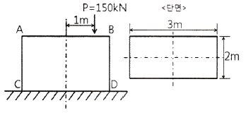
- 25
- 50
- 87.5
- 100
(정답률: 30%)

2. 그림과 같이 균일분포 하중을 받는 외팔보에 대해 굽힘에 의한 탄성변형에너지는? (단, 굽힘강성 EI는 일정하다.)
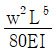
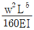
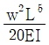
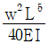
(정답률: 30%)
3. 지름 50mm인 중실축 ABC가 A에서 모터에 의해 구동된다. 모터는 600rpm으로 50kW의 동력을 전달한다. 기계를 구동하기 위해서 기어 B는 35kW, 기어 C는 15kW를 필요로 한다. 축 ABC에 발생하는 최대 전단응력은 몇 MPa 인가?
- 9.73
- 22.7
- 32.4
- 64.8
(정답률: 19%)
4. 그림과 같이 평면응력 조건하에 최대 주응력은 몇 kPa 인가? (단, σx = 400kPa, σy = -400kPa, τxy = 300kPa 이다.)
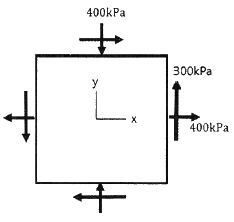
- 400
- 500
- 600
- 700
(정답률: 40%)
5. 지름 200mm인 축이 120rpm으로 회전하고 있다. 2m 떨어진 두 단면에서 측정한 비틀림 각이 1/15 rad 이었다면 이 축에 작용하고 있는 비틀림 모멘트는 약 몇 kN·m인가? (단, 가로탄성계수는 80 GPa 이다.)
- 418.9
- 356.6
- 3⑤.7
- 286.8
(정답률: 29%)
6. 단면적이 5cm2, 길이가 60cm인 연강봉을 천장에 매달고 30℃에서 0℃로 냉각시킬 때 길이의 변화를 없게 하려면 봉의 끝에 몇 kN의 추를 달아야 하는가? (단, 세로탄성계수 200GPa, 열팽창계수 a=12×10-6/℃ 이고, 봉의 자중은 무시한다.)
- 60
- 36
- 30
- 24
(정답률: 22%)
7. 전체 길이에 걸쳐서 균일 분포하중 200N/m가 작용하는 단순 지지보의 최대 굽힘응력은 몇 MPa 인가? (단, 폭×높이 = 3cm×4cm인 직사각형 단면이고, 보의 길이는 2m 이다. 또한 보의 지점은 양 끝단에 있다.)
- 12.5
- 25.0
- 14.9
- 29.8
(정답률: 28%)
8. 그림과 같은 단면에서 가로방향 도심축에 대한 단면 2차모멘트는 약 몇 mm4 인가?
- 10.67 × 106
- 13.67 × 106
- 20.67 × 106
- 23.67 × 106
(정답률: 20%)
9. 그림과 같은 단순보의 중앙점(C)에서 굽힘모멘트는?
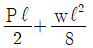
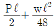
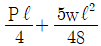
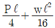
(정답률: 10%)
10. 다음 보에 발생하는 최대 굽힘 모멘트는?
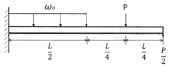
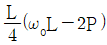
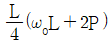
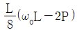
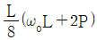
(정답률: 17%)
11. 반경 r, 내압 P, 두께 t인 얇은 원통형 압력용기의 면내에서 발생되는 최대 전단응력(2차원 응력 상태에서의 최대 전단응력)의 크기는?
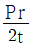
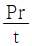
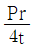
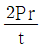
(정답률: 25%)
12. 그림과 같이 전체 길이가 3L인 외팔보에 하중 P가 B점과 C점에 작요알 때 자유단 B에서의 처짐량은? (단, 보의 굽힘강성 EI는 일정하고, 자중은 무시한다.)
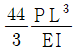
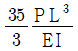
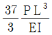
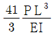
(정답률: 26%)
13. 그림과 같이 길이가 2L인 양단고정보의 중앙에 집중하중이 아래로 가해지고 있다. 이때 중앙에서 모멘트 M이 발생하였다면 이 집중하중(P)의 크기는 어떻게 표현되는가?

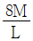
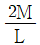
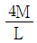
(정답률: 14%)
14. 그림과 같이 직사각형 단면의 목재 외팔보에 집중하중 P가 C점에 작용하고 있다. 목재의 허용압축응력을 8MPa, 끝단 B점에서의 허용 처짐량을 23.9mm라고 할 때 허용압축응력과 허용 처짐량을 모두 고려하여 이 목재에 가할 수 있는 집중하중 P의 최대값은 약 몇 kN인가? (단, 목재의 세로탄성계수는 12GPa, 단면2차모멘트는 1022×10-6 m4, 단면계수는 4.601×10-3 m3 이다.)
- 7.8
- 8.5
- 9.2
- 10.0
(정답률: 14%)
15. 길이 15m, 봉의 지름 10mm인 강봉에 P = 8 kN을 작용시킬 때 이 봉의 길이방향 변형량은 약 몇 mm인가? (단, 이 재료의 세로탄성계수는 210 GPa 이다.)
- 5.2
- 6.4
- 7.3
- 8.5
(정답률: 32%)
16. 바깥지름이 46mm인 속이 빈 축이 120kW의 동력을 전달하는데 이 때의 각속도는 40rev/s 이다. 이 축의 허용비틀림응력이 80 MPa 일 때, 안지름은 약 몇 mm 이하이어야 하는가?
- 29.8
- 41.8
- 36.8
- 48.8
(정답률: 13%)
17. 알루미늄봉이 그림과 같이 축하중 받고 있다. BC간에 작용하고 있는 하중의 크기는?
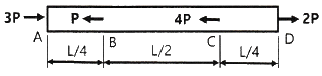
- 2P
- 3P
- 4P
- 8P
(정답률: 25%)
18. 다음과 같이 3개의 링크를 핀을 이용하여 연결하였다. 2000N의 하중 P가 작용할 경우 핀에 작용되는 전단응력은 약 몇 MPa 인가? (단, 핀의 지름은 1cm 이다.)
- 12.73
- 13.24
- 15.63
- 16.56
(정답률: 29%)
19. 5cm×4cm 블록이 x축을 따라 0.⑤cm 만큼 인장되었다. y방향으로 수축되는 변형률(εy)은? (단, 포아송 비(ν)는 0.3 이다.)
- 0.000015
- 0.0015
- 0.003
- 0.03
(정답률: 22%)
20. 허용인장강도가 400MPa 인 연강봉에 30 kN의 축방향 인장하중이 가해질 경우 이 강봉의 지름은 약 몇 cm 인가? (단, 안전율은 5 이다.)
- 2.69
- 2.93
- 2.19
- 3.33
(정답률: 29%)
2과목: 기계제작법
21. 다음 용접 중 모재의 용접부에 용제 공급관을 통하여 입상의 용제를 쌓아놓고 그 속에 와이어전극을 송급하면 모재사이에서 아크가 발생하며 이 열에 의하여 와이어 자체가 용융되어 접합되는 용접은?
- 불활성가스 아크용접
- 탄산가스 아크용접
- 서브머지드 아크용접
- 테르밋 용접
(정답률: 42%)
22. 선반에서 절삭비(cutting ratio, γ)의 표현식으로 옳은 것은? (단, ø는 전단각, α는 공구 윗면 경사각이다.)
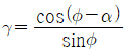
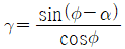
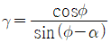
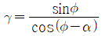
(정답률: 4%)
23. 주철, 주강제의 작은 볼(ball)을 고속으로 가공물의 표면에 분사하여 표면을 매끄럽게 하며 동시에 얇은 경화층을 얻어 피로강도나 기계적 성질을 향상시키는 가공 방법은?
- 브로칭(broaching)
- 버니싱(burnishing)
- 숏 피닝(shot-peening)
- 액체 호닝(liquid honing)
(정답률: 35%)
24. 센터리스 연삭기에 사용하는 부품이 아닌 것은?
- 베어링 센터
- 조정 숫돌
- 연삭 숫돌
- 가공물 지지대
(정답률: 30%)
25. 입도가 작고 연한 숫돌을 작은 압력으로 가공물 표면에 가압하면서 가공물에 이송을 주고, 숫돌을 좌우로 진동시키면서 가공하는 방법은?
- 래핑
- 버핑
- 폴리싱
- 슈퍼 피니싱
(정답률: 14%)
26. 다음 중 항온 열처리의 종류로 가장 거리가 먼 것은?
- 오스템퍼링
- 마템퍼링
- 오스퀜칭
- 마퀜칭
(정답률: 22%)
27. 절삭유제를 사용하는 목적이 아닌 것은?
- 능률적인 침 제거
- 공작물과 공구의 냉각
- 절삭열에 의한 정밀도 저하 방지
- 공구 윗면과 칩 사이의 마찰 증대
(정답률: 48%)
28. 방전가공용 전극재료의 구비조건으로 틀린 것은?
- 방전가공성이 우수할 것
- 성형이 용이하고 가격이 저렴할 것
- 융점이 높아 방전 시 소모가 적을 것
- 전기 저항값이 높고 전기 전도도가 낮을 것
(정답률: 35%)
29. 다음 중 다이캐스팅에 관한 설명으로 틀린 것은?
- 대량생산에 적합하다.
- 용융금속을 고압, 고속으로 준비하여 주물을 얻는 방법이다.
- 기계 가공여유가 필요하다.
- 복잡한 형상의 주조가 가능하다.
(정답률: 28%)
30. 절삭공구 재료 중 다이아몬드의 일반적인 특성에 대한 설명 중 틀린 것은?
- 장시간 고속으로 절삭이 가능하다.
- 금속에 대한 마찰계수 및 마모율이 크다.
- 우수한 표면 거칠기를 얻을 수 있다.
- 경도가 커서, 날 끝이 손상되면 재가공이 어렵다.
(정답률: 33%)
31. 다음 중 불활성가스 아크용접에 사용되는 가스가 아닌 것은?
- 헬륨
- 네온
- 산소
- 아르곤
(정답률: 23%)
32. 램(ram)에 설치된 바이트를 왕복 운동시켜 비교적 소형 공작물의 평면이나 홈 드을 절삭하는 기계는?
- 셰이퍼
- 플레이너
- 슬로터
- 보링머신
(정답률: 14%)
33. 이미 치수를 알고 있는 표준 값과의 편차를 구하여 치수를 알아내는 측정방법은?
- 절대 측정
- 비교 측정
- 간접 측정
- 직접 측정
(정답률: 28%)
34. 주물표면에 금속편을 붙여 급랭하면 표면의 경도가 증가되어 내마모성과 내압성을 향상시킨 주조는?
- 연속 주조
- 칠드 주조
- 진공 주조
- 인베스트먼트 주조
(정답률: 43%)
35. 측정기의 구조상에서 일어나는 오차로서 눈금 또는 피치의 불균일이나 마찰, 측정압 등의 변화 등에 의해 발생하는 오차는?
- 개인 오차
- 기기 오차
- 우연 오차
- 불합리 오차
(정답률: 42%)
36. 냉간가공과 비교하여 열간가공의 특징으로 틀린 것은?
- 동력소모가 크다.
- 방향성을 갖는 주조조직이 제거된다.
- 파괴되었던 결정립이 다시 생성되어 재질이 균일해진다.
- 변형저항이 적어 짧은 시간 내에 강력한 가공이 가능하다.
(정답률: 29%)
37. 연삭 중 숫돌의 떨림 현상이 발생하는 원인으로 가장 거리가 먼 것은?
- 숫돌의 결합도가 약할 때
- 숫돌축의 편심 되어 있을 때
- 숫돌의 평형상태가 불량할 때
- 연삭기 자체에서 진동이 있을 때
(정답률: 40%)
38. 원주를 35등분 분할하려고 할 때 사용해야 할 분할판의 구멍수는? (단, 밀링작업에서 브라운 샤프형을 사용한다.)
- 19
- 20
- 21
- 27
(정답률: 25%)
39. 알루미늄, 구리 등의 재료를 컨테이너에 넣고 강력한 압축력을 주면 다이오리피스(die orifice)를 통과하여 원하는 제품으로 가공하는 방법은?
- 인출 가공
- 프레스 가공
- 인발 가공
- 압출 가공
(정답률: 38%)
40. 볼트, 스크루, 리벳 등의 머리 부분을 제작하는데 사용되는 단조법은?
- 헤딩(heading)
- 허빙(hubbing)
- 코이닝(coining)
- 스웨이징(swaging)
(정답률: 33%)
3과목: 기계설계 및 기계재료
41. 코일 스프링에서 코일의 지름이 30mm, 코일 소선의 지름이 6mm, 유효감김수는 8.5이고, 허용전단응력이 600 MPa 일 때 받을 수 있는 최대하중(N)은? (단, 왈의 응력수정계수는 1로 한다.)
- 980
- 1182
- 1513
- 1696
(정답률: 13%)
42. 평 벨트 전동에 비하여 V벨트 전동의 특징에 관한 설명으로 틀린 것은?
- 바로걸기와 엇걸기가 가능하다.
- 미끄럼이 적고, 속도비가 크다.
- 접촉 면적이 넓으므로 큰 동력을 전달한다.
- 장력이 작으므로 베어링에 걸리는 하중도 작다.
(정답률: 31%)
43. 유체 커플링의 입력축 회전수(N1)는 1500rpm, 출력축의 회전수(N2)는 1460rpm 일 때, 이 커플링의 효율(%)은 얼마인가?
- 88
- 91
- 94
- 97
(정답률: 42%)
44. 볼 베어링의 기본 동정격하중은 어떻게 정의되는가?
- 33.3 rpm으로 50시간 운전수명에 견디는 하중
- 33.3 rpm으로 500시간 운전수명에 견디는 하중
- 33.3 rpm으로 5000시간 운전수명에 견디는 하중
- 33.3 rpm으로 50000시간 운전수명에 견디는 하중
(정답률: 30%)
45. 접촉면의 바깥지름 150mm, 안지름 140mm, 폭 35mm의 외접 원추 클러치에서 회전수 600rpm 으로 동력을 전달하고자 한다. 접촉면 압력이 0.3MPa 이하가 되도록 사용한다면 최대 몇 kW 의 동력을 전달할 수 있는가? (단, 접촉부 마찰계수는 0.2 이다.)
- 3.02
- 3.45
- 3.94
- 4.36
(정답률: 4%)
46. 주철제 벨트 풀리가 지름 40mm의 연강축에 폭은 10mm, 높이는 8mm인 묻힘키로 조립되어 있다. 축의 회전속도를 120rpm으로 7.5kW 의 동력을 전달하고자 할 때 키의 길이는 약 몇 mm 이상으로 해야 하는가? (단, 키의 허용전단응력은 110 N/mm2이고, 허용전단응력만을 고려한다.)
- 18.7
- 22.4
- 27.2
- 35.5
(정답률: 13%)
47. 그림과 같은 양쪽 옆면 필릿 용접에서 오른쪽으로 P의 하중이 작용하고 있다. 용접부 목걸이를 h라고 할 때 용접부에 작용하는 전단응력(τ) 식으로 옳은 것은?
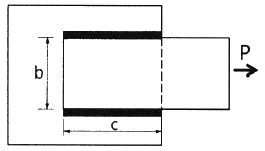
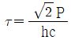
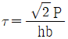
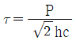
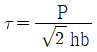
(정답률: 28%)
48. 유효지름이 32.5mm인 표준 4각나사로 이루어진 너트가 있다. 이 너트에 축방향으로 15kN의 질량을 가진 물체를 지탱하고자 할 때 너트 높이는 약 몇 mm 이상이어야 하는가? (단, 나사산의 허용 접촉면 압력은 10MPa, 나사산의 높이는 2.5mm, 피치는 5mm이고, 나사의 접촉부 마찰계수는 0.1 이다.)
- 30
- 34
- 39
- 44
(정답률: 19%)
49. 다음 브레이크의 종류 중 마찰력을 이용하는 브레이크에 해당하지 않는 것은?
- 블록 브레이크(block brake)
- 폴 브레이크(pawl brake)
- 밴드 브레이크(band brake)
- 원추 브레이크(cone brake)
(정답률: 24%)
50. 평기어에서 압력각을 증가시킬 때 나타나는 현상을 설명한 것으로 옳지 않은 것은?
- 미끄럼률은 감소한다.
- 기어 강도는 증가한다.
- 물림률은 증가한다.
- 언더컷은 감소한다.
(정답률: 17%)
51. 금속을 냉간 가공하였을 때의 기계적·물리적 성질의 변화에 대한 설명으로 틀린 것은?
- 냉간 가공도가 증가할수록 강도는 증가한다.
- 냉간 가공도가 증가할수록 연신율은 증가한다.
- 냉간 가공이 진행됨에 따라 전기 전도율을 낮아진다.
- 냉간 가공이 진행됨에 따라 전기적 성질인 투자율은 감소한다.
(정답률: 25%)
52. 강을 담금질하면 경도가 크고 메지므로, 인성을 부여하기 위하여 A1 변태점 이하의 온도에서 일정 시간 유지하였다가 냉각하는 열처리 방법은?
- 퀜칭(Quenching)
- 템퍼링(Tempering)
- 어닐링(Annealing)
- 노멀라이징(Normalizing)
(정답률: 28%)
53. 그림과 같은 항온 열처리하여 마텐자이트와 베이나이트의 혼합조직을 얻는 열처리는?
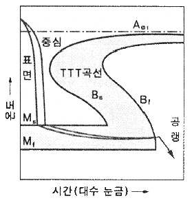
- 담금질
- 패턴팅
- 마템퍼링
- 오스템퍼링
(정답률: 26%)
54. 열경화성 수지나 충전 강화수지(FRTP)등에 사용되는 것으로 내열성, 내마모성, 내식성이 필요한 열간 금형용 재료는?
- STC3
- STS5
- STD61
- SM45C
(정답률: 33%)
55. 라우탈(Lautal) 합금의 주성분으로 옳은 것은?
- Al-Si
- Al-Mg
- Al-Cu-Si
- Al-Cu-Ni-Mg
(정답률: 13%)
56. 구리판, 알루미늄판 등 기타 연성의 판재를 가압 성형하여 변형 능력을 시험하는 시험법은?
- 커핑 시험
- 마멸 시험
- 압축 시험
- 크리프 시험
(정답률: 22%)
57. Fe-C 평형상태도에 대한 설명으로 틀린 것은?
- 강의 A2변태선은 약 768℃이다.
- A1변태선을 공식선이라 하며, 약 723℃이다.
- A0변태점을 시멘타이트의 자기변태점이라 하며, 약 210℃ 이다.
- 공정점에서의 공정물을 펄라이트라 하며, 약 1490℃ 이다.
(정답률: 22%)
58. 켈밋 합금(Kelmet alloy)의 주요 성분으로 옳은 것은?
- Pb-Sn
- Cu-Pb
- Sn-Sb
- Zn-Al
(정답률: 40%)
59. 탄소강에 함유된 인(P)의 영향을 옳게 설명한 것은?
- 경도를 감소시킨다.
- 결정립을 미세화시킨다.
- 연신율을 증가시킨다.
- 상온 취성의 원인이 된다.
(정답률: 17%)
60. 스테인리스강의 조직계에 해당되지 않는 것은?
- 펄라이트계
- 페라이트계
- 마텐자이트계
- 오스테나이트계
(정답률: 25%)
4과목: 기구학 및 CAD
61. CSG방식의 모델러에서 제공되는 모델링 기능만으로 짝지어진 것은?
- 오일러 작업, 리프팅 작업
- 오일러 작업, 불리안 작업
- 트위킹 작업, 라운딩 작업
- 기본입체 생성 작업, 불리안작업
(정답률: 10%)
62. 다음 형상 모델링 시스템 중 3차원적인 형상을 공간상의 선으로 표시하는 가장 간단한 형태의 형상 모델링 시스템은?
- 솔리드 모델링
- 비다양체 모델링
- 파라메트릭 모델링
- 와이어 프레임 모델링
(정답률: 45%)
63. 솔리드모델링 시스템에서 구멍, 포켓, 모따기, 필릿, 슬롯 등과 같이 모델링의 단위로서 공학적 의미를 담고 있는 것은?
- 구속조건
- 특징형상
- 파라미터
- 어셈블리
(정답률: 34%)
64. 3차원 공간상에 있는 임의 점의 동차 좌표값(x, y, z, 1)을 y축 기준으로 θ각도만큼 회전 시키고자 한다. 다음 회전변환 행렬에서 Try 로 옳은 것은?
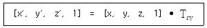
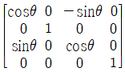
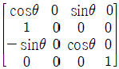
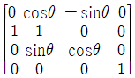
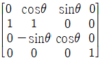
(정답률: 23%)
65. CAD 관련 도구들에 대한 설명으로 가장 거리가 먼 것은?
- 설계물의 생성, 수정, 해석, 최적화에 관련한 컴퓨터 이용기술이다.
- 컴퓨터 그래픽과 공학 함수들을 이용하는 응용 프로그램이 구현된 어떠한 형태의 프로그램도 CAD소프트웨어 속한다.
- 단지 형상들만을 다루기 위한 형상 설계도구들로 해석이나 최적화 용도로는 사용하지 않는다.
- 컴퓨터 이용 제도와 형상 모델링 시스템이 CAD에서 가장 중요한 부분이다.
(정답률: 50%)
66. 직교좌표계(x, y, z)에서
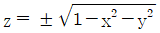
으로 표현되는 단위 구의 방정식을 매개변수 u, v를 이용 P(u, v) = (cos u cos v, sin u cos v, sin v)의 매개변수식으로 다시 표현하였다면, u, v의 적절한 범위는?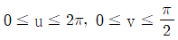
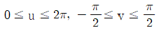
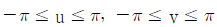
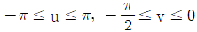
(정답률: 25%)
67. 원점이 중심이가 장축이 x 축이고 그 길이가 a, 단축이 y축이고 그 길이가 b인 타원을 표현하는 매개변수식은?
- x = (a-b)cosθ, y = (a-b)sinθ [0≤θ≤2π]
- x = acosθ, y = bsinθ [0≤θ≤2π]
- x = acoshθ, y = bsinhθ [0≤θ≤2π]
- x = (a-b)coshθ, y = (a-b)sinhθ [0≤θ≤2π]
(정답률: 22%)
68. 다음 설명에 해당되는 디스플레이 방식은?
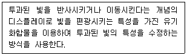
- 액정 디스플레이(LCD)
- 음극선튜브(CRT) 디스플레이
- 발광 다이오드(LED) 디스플레이
- 플라스마 가스 방출형(PGD) 디스플레이
(정답률: 34%)
69. 컴퓨터 그래픽에서 컬러를 표현하기 위해 사용되는 세 가지 색깔이 아닌 것은?
- 빨강
- 파랑
- 노랑
- 초록
(정답률: 32%)
70. 은선이나 은면을 제거하기 위해 사용되는 후면 제거(back-face) 알고리즘에서 눈에 보이지 않는 면에 해당하는 판단식은? (단, M은 면 위의 점으로부터 관찰자 방향의 벡터이고 N은 면 위의 법선 벡터이다.)
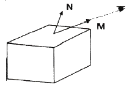
- M·N ＞ 0
- M·N = 0
- M·N ＜ 0
- M·N ≠ 0
(정답률: 17%)
71. 다음 중 체인전동에 대한 설명으로 가장 옳지 않은 것은?
- 고속회전에는 적합하지 않다.
- 고장력이 필요 없으므로 베어링의 마멸이 적다.
- 미끄럼이 없는 일정한 속도비를 얻을 수 있다.
- 스프로킷 휠의 잇수를 줄이면 진동과 소음이 적어진다.
(정답률: 46%)
72. 그림과 같이 5개의 링크로 평면운동을 하는 링크 기구의 자유도는 몇 개인가?
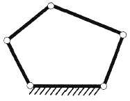
- 1
- 2
- 3
- 4
(정답률: 20%)
73. 바로걸기 평벨트 전동장치에서 풀리의 지름은 각각 D1, D2이고, 두 축간 거리가 C일 경우 벨트 전동장치에 사용되는 벨트 길이 L에 대한 식은? (단, D2 ≧ D1 이다.)
(정답률: 39%)
74. 다음 중 낮은 짝(또는 저차대우, lower pair)이 아닌 것은?
- 선짝(또는 선대우)
- 나사짝(또는 나사대우)
- 회전짝(또는 회전대우)
- 미끄럼짝(또는 미끄럼대우)
(정답률: 16%)
75. 캠의 윤곽곡선을 결정하는 요인으로 거리가 먼 것은?
- 캠의 각속도
- 종동절의 종류
- 종동절의 변위곡선
- 캠과 종동절의 편심량
(정답률: 19%)
76. 모듈이 20이고 잇수가 각각 15개, 20개인 한 쌍의 외접하는 평기어가 있다. 두 기어 간의 축간 거리는 약 몇 mm 인가?
- 300
- 350
- 400
- 450
(정답률: 43%)
77. 마찰자에서 운전 중 운전자가 원하는 대로 속도비를 변경할 수 있는 무단변속기구가 아닌 것은?
- 타원 마찰자식 무단변속기구
- 원판 마찰자식 무단변속기구
- 원추 마찰자식 무단변속기구
- 구면 마찰자식 무단변속기구
(정답률: 25%)
78. 두 축의 연장선이 서로 교차하는 기어는?
- 웜 기어
- 스퍼 기어
- 헬리컬 기어
- 직선베벨 기어
(정답률: 30%)
79. 지름 30cm인 디스크가 회전수 500rpm으로 회전하고 있을 때, 이 디스크의 원주속도(v)와 각속도(w)는 약 얼마인가?
- v = 7.9 m/s, w = 26.2 rad/s
- v = 7.9 m/s, w = 52.4 rad/s
- v = 15.7 m/s, w = 26.2 rad/s
- v = 15.7 m/s, w = 52.4 rad/s
(정답률: 17%)
80. 연쇄를 구성하는 1개의 링크에 운동을 주면 나머지 링크들은 일정한 운동을 하는 연쇄는?
- 고정연쇄
- 자유연쇄
- 한정연쇄
- 불한정연쇄
(정답률: 28%)
최대 인장응력 = (하중 × 편심거리) / 단면의 모멘트 of inertia × 최대 전단응력 계수
단면의 모멘트 of inertia는 직사각형 단면의 경우 (높이 × 너비^3) / 12 이므로, AC 선분에서의 최대 인장응력은 다음과 같다.
최대 인장응력 = (150 kN × 1 m) / ((200 mm × 400 mm^3) / 12) × 1.5
최대 인장응력 = 25 kPa
따라서 정답은 "25"이다.